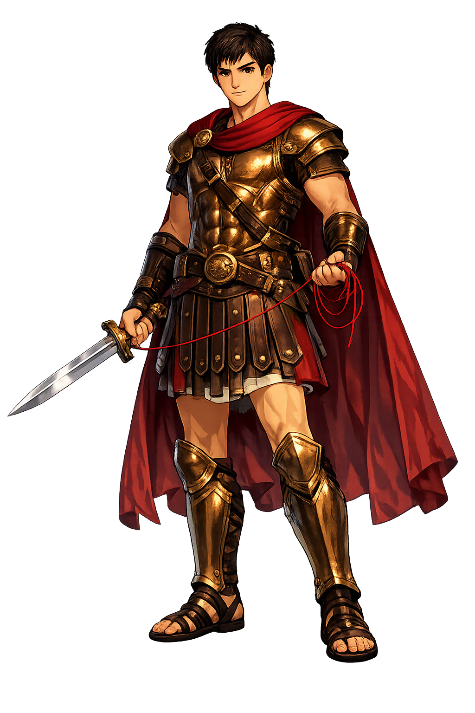

Stories of Thēseus
Thēseus's biography is the most complete 'life' of any Greek hero: the ephebic labours on the road, the Cretan expedition, the unification of Attica, the Helen abduction, the descent to Hades, and a squalid death on Skyros. Plutarch wrote his Life pairing him with Romulus; Athenian democracy wrote him first.
Aithra's son, raised at Troezen, lifted his father's sword from beneath the rock and chose the dangerous road to Athens — 'so that he might not be thought to owe his safety to any but himself' (Plutarch, Theseus 5–11). On the way he made the road safe: he killed Periphḗtēs the club-bearer near Epidaurus and took the club; Sínis the pine-bender on the Isthmus, bent to his own device; the Crommyonian sow; Skíron, who kicked travelers from his cliff; Kerkýon the wrestler of Eleusis; and Prokrustēs, 'the stretcher,' whose two beds he made him try in turn (Apollodorus, Epit. 1.1–4; Pausanias 2.1.3–4). Modern scholarship reads the cycle as an initiation map — the ephebe proving himself on the frontier before entering the city, monster by monster. Before Athens could gather its villages, its hero had to gather the road.
When the third tribute of youths and maidens sailed for Crete, Thēseus went among them, promising to kill the Minotaur. Ariádnē, daughter of Mínōs, fell in love with him and — on Daidalos's advice, some say — gave him a thread to fasten at the gate and unwind toward the monster's lair. In the labyrinth's innermost cell he fought the bull-man and beat it, in Apollodorus with his fists, in Plutarch with a sword; then he followed the line back through the dark and sailed away with the princess and the surviving Athenians (Apollodorus, Epit. 1.7–10; Plutarch, Theseus 15–19; Catullus 64 gives Ariádnē's side of what followed). The tribute ended; the labyrinth stood empty; its maker was still a prisoner inside it. The labyrinth yields to intelligence allied to desire — thread, not sword, is the true weapon.
Before departing, Thēseus had promised his father Aegeus to hoist white sails if he lived. On the homeward voyage — exultant, distracted, in some accounts maddened by grief at losing Ariádnē — he forgot, and the black sail stood. Aegeus, watching day after day from the Acropolis, saw the dark canvas and cast himself into the sea 'which from him bears its name' (Apollodorus, Epit. 1.10–11; Plutarch, Theseus 22). The aition is so tidy that ancient critics suspected it — Herodotus and Thucydides knew the sea simply as the Aegean — but the myth prevailed over the philology, as myths do. Thēseus arrived home a king and an orphan in the same hour. Athens's maritime empire rests, in its founding story, on a son's forgetfulness.
In maturity Thēseus's daring curdled. With his friend Peirithous he abducted the young Helen — hidden at Aphidnae until her brothers recovered her — and then, swearing between themselves to wed daughters of Zeus, the two heroes descended into Hades to take Persephone herself. They sat, uninvited, on the Chair of Lethe — 'the chair of forgetfulness' — and were fixed there by serpents; only Heracles, descending on another labour, tore Thēseus free, leaving, say the less reverent sources, part of his body behind on the rock (Plutarch, Theseus 31–35; Apollodorus, Epit. 1.23–24; Diodorus 4.63). Peirithous never rose. Even the greatest hero, when he treats the underworld like another road of monsters, becomes furniture in the house of the dead.
Thēseus's greatest labour was administrative. He persuaded — and, Plutarch concedes, in part compelled — Attica's independent townships to dissolve their councils and join one common city, with one council house and one prytaneion; the Synoikia festival still celebrated the union in Thucydides' day (Thucydides 2.15; Plutarch, Theseus 24–25; cf. Euripides, Suppliants 399–466, where he rules as a king who yields to persuasion). Tradition credits him with the Isthmian Games' foundation and with Attic coinage bearing the Minotaur as badge. His end was small: lured to Skyros by King Lykomedes, he was pushed from a cliff — 'he fell, and the island kept him' — until Kimon brought his bones home to Athens (Plutarch, Theseus 35–36; Pausanias 1.17.6). The hero dies by treachery in exile, but the city he assembled brings him home: synoecism as immortality.
Heroism, Athens, Labours
Thēseus is Athens's own hero — slayer of the Minotaur, gatherer of Attica's villages into one city, the only Greek hero whose biography runs from brigand-slaying boy to founding statesman. Half mortal, half sea-god's son, he is the mythic charter of Athenian democracy: strength civilized into law.
Periphḗtēs, Sínis, Skíron, Kerkýon, Prokrustēs: the road-monsters of the Saronic and Isthmian roads, slain in sequence on his way to Athens (Plutarch, Theseus 7–11).
He entered the labyrinth of Knossos with Ariádnē's thread and killed the Bull of Mínōs, ending the tribute of Athenian youths (Apollodorus, Epit. 1.8–10).
He 'gathered' Attica's independent towns into one common city — the synoikismós that made Athens, celebrated at the Synoikia festival (Thucydides 2.15; Plutarch, Theseus 24).
The only Greek hero credited with surrendering monarchy in his own city: he 'handed over the government to the multitude' and ruled as first citizen (Thucydides 2.15; Isocrates, Helen 23–37).
From the original script to the living URL
Θησεύς
The name in its original Greek form. Thēseus (Θησεύς) is attested in the source tradition — “The Gatherer (from τίθημι)”. Its diphthongs, long vowels, and acute accents carry the full phonetic and orthographic weight of the source tradition.
theseus
Reduced to plain theseus, the name loses everything that made it specific: diphthongs, long vowels, and acute accents. What remains is an ASCII string that machines can parse but that no longer speaks with its original voice.
Thēseus
The Unicode restoration recovers what ASCII flattened. Thēseus restores diphthongs, long vowels, and acute accents, returning the name to its original written dignity. The domain encodes to Punycode, but the browser displays the truth.
Thēseus.com → xn--thseus-q3a.com
The non-ASCII characters in Thēseus are encoded while the ASCII remains visible. To the DNS, it is Punycode. To humanity, it is Thēseus.
Owned, ideal, and ASCII forms of Thēseus
Thēseus
Restores Θησεύς. The live temple domain — thēseus.com.
Thēseús
Restores Θησεύς. Acute on the stressed short vowel, matching Greek Θησεύς; preserves stress where the canonical macron-only form records length only.. Not in the PuniCodex collection.
theseus
Flattens Θησεύς. The plain ASCII fallback — what DNS and legacy systems see.
How Thēseus was spoken
How Thēseus is preserved in writing
A bespoke provenance study for Thēseus is being prepared by the PUNICODEX scholarly team.
Contribute scholarly provenance →What does it mean that Athens chose, as its patron hero, a man whose greatest act was giving up power? Heracles purified; Achilles raged; Odysseus survived; Thēseus convened. His myth is the political one: the villages of Attica became a city because one strongman persuaded them that a shared fire was worth more than a dozen local ones — and then declined to be king of it. Thucydides, the least sentimental of historians, preserves this as fact (2.15). The myth also keeps the receipt: the Helen abduction and the katabasis show what becomes of a hero who treats the world as a road of monsters — he ends in the Chair of Lethe, and only a greater hero's hand pulls him out. Athens buried him in the middle of the city so that every citizen voting nearby would remember both halves: the road cleared, and the power surrendered. He remains the rare hero whose monument is a form of government.
Enter Extended Lore